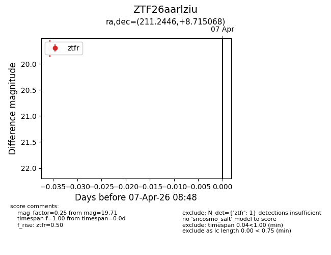
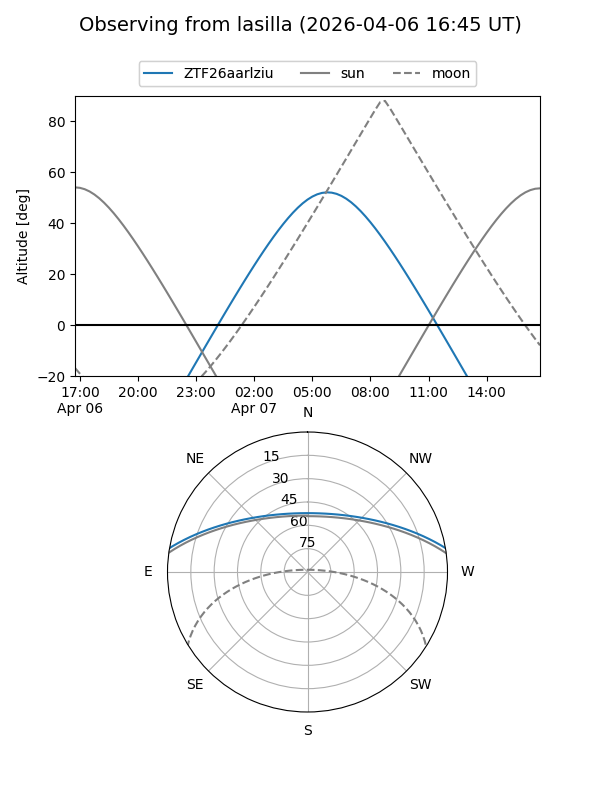
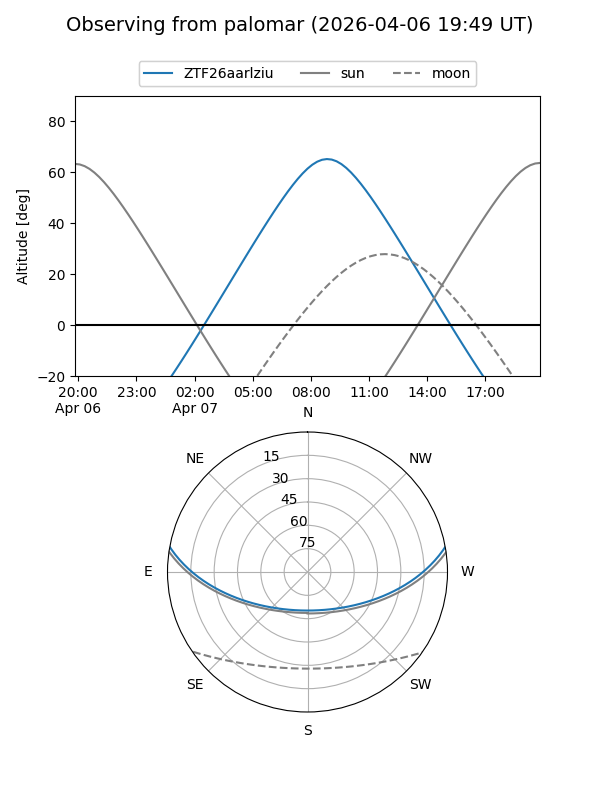

ZTF26aarlziu
Target ZTF26aarlziu at 2026-04-07 08:52
Aliases and brokers:
FINK: link
Lasair: link
ALeRCE: link
alt names
ZTF26aarlziu (ztf,fink_ztf)
Coordinates:
equatorial (ra, dec) = 211.2446,+8.71507
equatorial (HMS+DMS) = 14:04:58.70,+08:42:54.25
galactic (l, b) = (349.7222,+64.67569)
Flags:
Photometry:
last ztfr=19.71
1 ztfr detections
Lightcurve

Visibility


Additional plots